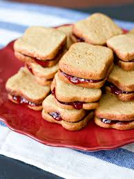
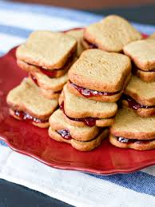

Recipes
Peanut Butter and Jelly Sandwhich
Origin: American
Source: Alex Likens
Category: Main Dish

This is a dish that is great at all times of year. Its mix of savory flavors with sweet jelly make sit a favorite dish for many people. This dish is great for any situation whether you are on the go, in a rush, or just looking for a tasty meal in your home.
Recipe Ingredients
- Bread
- Peanut Butter
- Jelly
Recipe Steps
- Take two piece of bread and place them on a plate
- Put a thick layer of jelly on one piece of the bread
- Put a thick layer of peanut butter on the other piece of the bread
- Put the two pieces of bread together so they face each other
Additional Food images
 


Double Chocolate Cookies
Origin: Michigan Source: Family Recipe Category: DessertMy daughter learned to make these cookies at a baking camp at Zingermanns and has tweaked the recipe to fit the taste buds of her siblings. They are extremely sugary so the salt helps to balance it. Note, these cookies are best eaten very quickly.
Recipe Ingredients
- Unsalted butter
- Granulated Sugar
- Packed light or dark brown sugar
- Large egg
- Pure vanilla extract
- Semi-sweet chocolate chunks (melted)
- All-purpose flour
- Natural unsweetened cocoa powder
- Baking soda
- Salt
- Semi-sweet chocolate chunks
Recipe Steps
- In a mixing bowl cream together the butter, granulated sugar, and brown sugar
- Add the egg and vanilla extract and beat well
- Add the melted chocolate
- In a separate bowl combine the flour, baking soda, cocoa powder and salt
- Combine the wet and dry ingredients
- Add the unmelted chocolate chunks.
- Form 15 cookies and place on a baking sheet.
- Cook for 12 to 13 minutes at 350 degrees.
Additional Food images


Crunchwrap Supreme Recipe
Origin: Taco Bell (Fake Mexican) Source: Taco Bell Website Category: Comfort Dish
Despite the noticeable price increase attributed to inflation, I'm an avid Taco Bell fan. There's an undeniable satisfaction in indulging in a Crunchwrap Supreme whenever hunger strikes. Fusing a traditional Mexican taco with a generously sized flattened burrito creates a symphony of flavors that resonates perfectly with my taste buds. The mere thought of it sets my stomach on a journey of anticipation, as each bite combines the comforting essence of familiar ingredients in a novel and exciting way. Yo quiero Taco Bell.
Recipe Ingredients
- Tortilla
- Ground Beef
- Circular taco shell
- Cheese
- Lettuce
- Sour Cream
- Melted Cheese
- Diced tomatoes
- Taco Bell Seasoning
- Cheese sauce
Recipe Steps
- Make the ground beef with taco seasoning, season it well with spices and Taco Bell spices from Target
- Lay the tortilla on the grill and put cheese sauce on top of it, smooth it out in a circular motion, and be generous with the amount
- Next, put the circular crunch taco shell on top of it while adding a generous amount of sour cream on it, don't be shy!
- Next add your seasoned to ground beef onto the tortilla
- Finally, add your diced tomatoes, lettuce, and cheese.
- Wrap your Crunchwrap pentagon style and then grill it on a hot pan for about 4 minutes on medium heat, both sides
- Take it off the pan and then cut it in half and you have your Crunchwrap suprem
Additional Food images